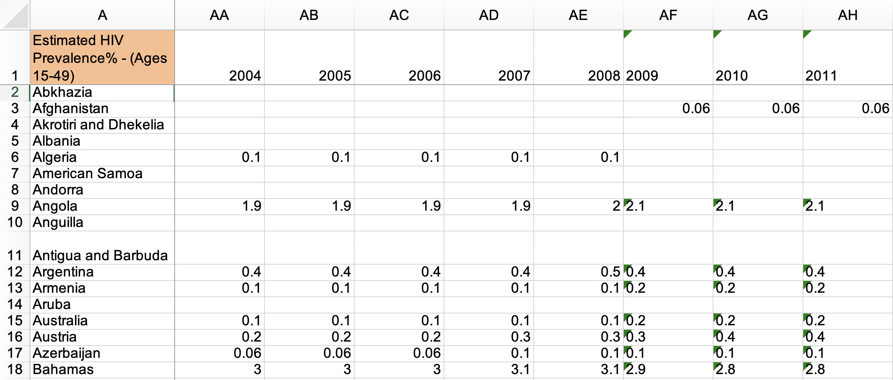
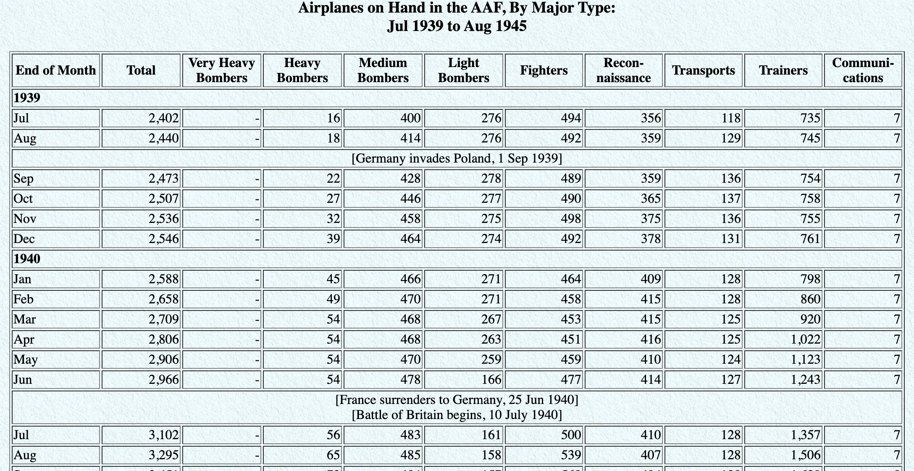

Rows: 336,776
Columns: 19
$ year <int> 2013, 2013, 2013, 2013, 2013, 2013, 2013…
$ month <int> 1, 1, 1, 1, 1, 1, 1, 1, 1, 1, 1, 1, 1, 1…
$ day <int> 1, 1, 1, 1, 1, 1, 1, 1, 1, 1, 1, 1, 1, 1…
$ dep_time <int> 517, 533, 542, 544, 554, 554, 555, 557, …
$ sched_dep_time <int> 515, 529, 540, 545, 600, 558, 600, 600, …
$ dep_delay <dbl> 2, 4, 2, -1, -6, -4, -5, -3, -3, -2, -2,…
$ arr_time <int> 830, 850, 923, 1004, 812, 740, 913, 709,…
$ sched_arr_time <int> 819, 830, 850, 1022, 837, 728, 854, 723,…
$ arr_delay <dbl> 11, 20, 33, -18, -25, 12, 19, -14, -8, 8…
$ carrier <chr> "UA", "UA", "AA", "B6", "DL", "UA", "B6"…
$ flight <int> 1545, 1714, 1141, 725, 461, 1696, 507, 5…
$ tailnum <chr> "N14228", "N24211", "N619AA", "N804JB", …
$ origin <chr> "EWR", "LGA", "JFK", "JFK", "LGA", "EWR"…
$ dest <chr> "IAH", "IAH", "MIA", "BQN", "ATL", "ORD"…
$ air_time <dbl> 227, 227, 160, 183, 116, 150, 158, 53, 1…
$ distance <dbl> 1400, 1416, 1089, 1576, 762, 719, 1065, …
$ hour <dbl> 5, 5, 5, 5, 6, 5, 6, 6, 6, 6, 6, 6, 6, 6…
$ minute <dbl> 15, 29, 40, 45, 0, 58, 0, 0, 0, 0, 0, 0,…
$ time_hour <dttm> 2013-01-01 05:00:00, 2013-01-01 05:00:0…Data Wrangling I
STAT 7500
Katie Fitzgerald, adapted from datasciencebox.org
Thinking with data
By the end of class, you should be able to:
- Translate a question into a sequence of data transformations.
- Predict how an operation changes rows, columns, or their meaning.
- Check whether the result answers the intended question.
Before running a pipeline: What should the dimensions be? What should one row of the result represent?
Tidy data
Happy families are all alike; every unhappy family is unhappy in its own way.
Leo Tolstoy
Tidy datasets are all alike; every untidy dataset is untidy in its own way.
Characteristics of tidy data:
- Each variable forms a column.
- Each observation forms a row.
- Each type of observational unit forms a table.
Characteristics of untidy data:
!@#$%^&*()
What would one row represent?

What are the variables? What would one row represent in a tidy version?
A grammar of data wrangling
dplyr provides functions that act as verbs for working with data frames.
| Our goal | Functions |
|---|---|
| Choose columns | select() |
| Choose or order rows | filter(), arrange(), slice() |
| Create or change variables | mutate() |
| Describe groups | group_by(), summarise(), count() |
| Identify unique values or combinations | distinct() |
Tactile activity
Data: NYC flights
Each row represents a flight scheduled to depart from JFK, LGA, or EWR in 2013.
filter() chooses rows
Keep flights whose destination is LAX:
- R evaluates
dest == "LAX"for each row. filter()keeps rows where the condition isTRUE.- All columns remain; retained rows keep their relative order.
- A condition that evaluates to
NAdoes not retain that row.
Use == to test equality. Use = to name an argument or a new column.
Combining conditions
Logical operators in R
| Operator | Meaning |
|---|---|
< |
Less than |
<= |
Less than or equal to |
> |
Greater than |
>= |
Greater than or equal to |
== |
Equal to |
!= |
Not equal to |
| Expression | Meaning |
|---|---|
x & y |
Both conditions |
x \| y |
At least one condition |
!x |
Negation of a condition |
is.na(x) |
Is missing |
!is.na(x) |
Is observed |
x %in% y |
Is among the values in y |
Membership and combined logic
The destination condition and the parenthesized condition must hold.
Would replacing | with & keep more rows, fewer rows, or possibly the same number?
Fewer or the same number: both delays must now be negative.
select() chooses columns
# A tibble: 336,776 × 2
dep_delay arr_delay
<dbl> <dbl>
1 2 11
2 4 20
3 2 33
4 -1 -18
# ℹ 336,772 more rowsAll 336776 observations remain, in their original order.
select() changes which variables are available. It does not test their values.
arrange() reorders rows
Every observation and column remains. Entire rows move together.
For these local data frames, missing values sort last in either direction.
slice() chooses row positions
The first five rows in the current order:
The five flights with the largest departure delays:
Sorting first determines which observations occupy those positions.
Input and output
For the data-frame verbs used here:
- The first argument is the data frame.
- Subsequent arguments describe the operation.
- The result is another data frame.
- The original object is unchanged unless we assign a result to it.
Which object is the input? Which variables will the output contain?
What is a pipe?
|> passes the result on its left to the function on its right. For these calls, it supplies the first argument.
These expressions return the same result:
Read the pipe as “and then.”
Data wrangling, step by step
- Start with the flights data.
- Keep four variables.
- Order flights from largest to smallest departure delay.
- Keep the first five rows of that result.
Output: 5 rows and 4 columns. Each row still represents a flight.
Live coding and practice: Cycle 1
Switch to the flights QMD: choosing and ordering flights
Predict the output, write a pipeline, then inspect the result.
Focus: choosing columns, filtering conditions, and the order of operations.
Before running: What should the rows and columns represent?
Tactile activity: Cycle 2
Switch to MathLink: creating a variable
Create a new column using values already in each row.
Focus: mutate() and saving a result.
Does creating a variable change the number of observations?
mutate() creates or changes variables
- Compute a value for each flight using its
air_time. - A new name adds a column; an existing name replaces that column.
- Existing rows remain, in their original order.
Check the units: minutes divided by 60 gives hours.
New variables can use earlier ones
air_time_hours is available to the next calculation in the same call.
mph describes average miles per hour using time in the air.
Why would dividing distance by air_time produce a different unit?
Saving the result
This expression displays a result; it does not add a column to flights:
Assign the result to use it later:
flights retains the original data. flights_work contains the new column.
Logical variables
| Arrival delay | on_time |
|---|---|
| Negative or zero | TRUE |
| Positive | FALSE |
| Missing | NA |
Here “on time” means arriving at or before the scheduled arrival time. The definition is part of the analysis.
Break
10 minutes
Live coding and practice: Cycle 2
Switch to the flights QMD: creating flight variables
Create air_time_hours, mph, and on_time. Save the result as flights_work.
Inspect the relevant columns. Check one calculation by hand.
Tactile activity: Cycle 3
Switch to MathLink: summarizing observations
Compute an overall summary. Then group the rows and compute a summary for each group.
Focus: summarise(), group_by(), and count().
What does one row of the summary table represent?
summarise() computes summary statistics
# A tibble: 1 × 1
mean_delay
<dbl>
1 12.6For an ungrouped data frame, these summary calculations produce one row.
Give each output column a meaningful name, such as mean_delay.
The result describes a collection of flights. It no longer contains one row per flight.
Missing values in summaries
na.rm = TRUE excludes missing values from that calculation. It does not remove rows from the original data frame.
Whose delays contribute to our mean?
Only flights with observed departure delays. An observed mean does not tell us the missing delays.
group_by() defines groups
group_by(month)retains the rows and columns, adding grouping information.summarise()performs the calculation within each month.- The result has 12 rows and 2 columns:
monthandmean_delay.
One row now represents one month.
Multiple summary statistics
Each month has a mean, a median, and a count of observed departure delays.
.groups = "drop" returns an ungrouped summary table.
count() creates a frequency table
These give the same counts for the ungrouped flights data:
n() counts rows in a group, including rows with missing values in other columns.
n() and sum(!is.na(dep_delay)) answer different questions.
Live coding and practice: Cycle 3
Switch to the flights QMD: comparing months
How does departure delay vary across months? Does the answer depend on whether we compare means or medians?
Sketch the output table before coding. Explain what each row represents afterward.
What changed?
For the ungrouped data and ordinary uses shown today:
| Operation | Rows | Columns / meaning |
|---|---|---|
select() |
Preserved | Chosen columns |
filter() |
Qualifying rows | Columns preserved |
arrange() |
Reordered | Columns preserved |
slice() |
Chosen positions | Columns preserved |
mutate() |
Preserved | New or changed variables |
group_by() |
Preserved | Grouping information added |
summarise() |
One per group | Group keys and summaries |
count() |
One per observed combination | Group keys and frequencies |
Check the pipeline
What prevents this pipeline from answering the question?
select() removed dep_delay. Keep it until its last use, or omit that selection.
Check the final output
Which statement describes the final output?
A. All original flights, with a new logical column.
B. Flights with observed arrival delays of zero or less, with on_time retained.
C. One row reporting the number of on-time flights.
B. mutate() adds the column; filter() then retains qualifying rows.
Before you trust the result
- Rows: What does one row represent now?
- Columns: Are the necessary variables still available?
- Values: Do units, ranges, and missing values make sense?
- Question: Did the operation order select the intended observations?
Which check would have helped you catch a mistake today?
Additional examples and reference
Worked examples and details for review
Another tidy-data example

What variables appear in headings or labels? Which values are summaries?
Another tidy-data example: Census tables

How would you separate variable names, estimates, and labels into a data table?
Source: US Census Bureau, General Economic Characteristics, ACS 2017.
Inspecting a data frame
Documentation explains definitions and units that column names alone may not reveal.
More ways to select()
Select helpers
| Helper | Selects columns whose names… |
|---|---|
starts_with("dep") |
Start with dep |
ends_with("delay") |
End with delay |
contains("time") |
Contain time |
matches("pattern") |
Match a regular expression |
num_range("x", 1:3) |
Are x1, x2, or x3 |
all_of(vars) |
Appear in the character vector vars; all must exist |
any_of(vars) |
Appear in vars; absent names are skipped |
everything() |
Include all remaining columns |
last_col() |
Identify the last column |
Pipelines and plot layers
Use |> to pass a data frame into the next operation. Use + to add layers to a ggplot.
The filtered data become the first argument to ggplot(). geom_histogram() then adds a layer to that plot.
Swapping |> and + changes what the code means; they are not interchangeable.
Pipe notation, style, and comments
You may encounter %>% in older examples. We use |> in this course. Both support the simple data-frame pipelines shown here.
- Put spaces around operators and after commas.
- Put each pipeline step on a new line, with
|>at the end of the preceding line. - Text after
#on a code line is a comment; R does not execute it.
Does the order matter?
Five largest departure delays among LAX flights.
The second pipeline may return fewer than five rows.
Missing values and conditions
Keep flights whose arrival delays are observed:
Use is.na() to identify missing values. arr_delay == NA cannot test whether a value is missing.
distinct() finds unique combinations
One row per origin airport.
distinct() identifies which combinations occur. count() also reports how often.
Counting and sorting
# A tibble: 3 × 2
origin n
<chr> <int>
1 EWR 120835
2 JFK 111279
3 LGA 104662sort = TRUE puts the largest frequencies first.
arrange(n) puts the smallest frequencies first.
Counting combinations
Both count the same origin–destination combinations.
Changing the argument order changes the column order and default row ordering, not the frequency associated with each combination.
Useful summary functions
| Function | Calculates |
|---|---|
mean(x) |
Arithmetic mean |
median(x) |
Median |
min(x), max(x) |
Smallest and largest values |
sd(x) |
Sample standard deviation |
sum(x) |
Sum |
quantile(x, probs = 0.25) |
First quartile |
n() |
Number of rows in the current group |
The functions taking x above accept na.rm = TRUE. n() counts rows and does not take a variable or na.rm argument.
mutate() versus summarise()
Grouping persists until it is removed
One row represents a month–origin combination.
- With these summaries, omitting
.groupsdrops the last grouping level; earlier levels can remain. .groups = "drop"removes all grouping from the result.ungroup()removes grouping from an existing grouped data frame.
Proportions need a denominator
Define the question before calculating an on-time proportion:
| Denominator | Interpretation |
|---|---|
| Flights with observed arrival delays | Fraction on time among flights with known arrival outcomes |
| All scheduled flights | Fraction of scheduled flights known to have arrived on time |
These can differ when arrival delays are missing.
Missing arrival information is not evidence of either an on-time or a late arrival.
On-time proportions among observed arrivals
The denominator is the number of flights with observed arrival delay in that month.
Filtering to on_time before counting the denominator would remove the late flights.
Overall versus within-group proportions
A complete monthly summary
Each row represents a month. The delay summaries use all observed departure delays in that month, regardless of whether the flight arrived on time.
A pipeline can run and still answer the wrong question
A successful run tells us that R could carry out the instructions.
It does not establish that we:
- Selected the intended observations.
- Used the intended units or definition.
- Chose the right grouping or denominator.
- Interpreted missing values appropriately.
Explain the output in the language of the original question.